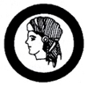
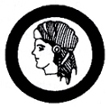

 Filipino Heritage
- Write a biography of at least five Filipino heroes or great men. Explain to your Outfit what outstanding work they did for our country that made them great. Describe any of their personal virtues or qualities that are worth emulation by the youth.
- Cite at least five (5) literary works written by Filipino heroes or great men. Explain to your Outfit the significance of each of these literary works. Select at least three (3) passages/ideas from each which you think are still relevant today.
- Compile and relate to your Outfit ten (10) Filipino traditions that are worth emulating. Give reasons why they should be emulated and preserved.
- Compile and recite to your Outfit twenty (20) Filipino proverbs; explain at least half of them.
- Recite a poem written by your favorite Filipino hero or great man in an Outfit meeting and explain the meaning of the lines or phrase of the poem.
- Take part in a Crew or Outfit activity or any project honoring the memory of Filipino heroes or great men.
- Visit any historical place or shrine connected with Filipino heroes or great men. Make a written report of the visit with the Outfit Advisor.
|